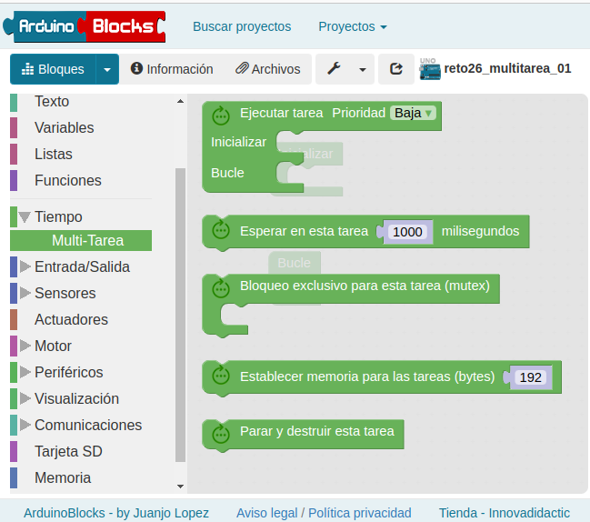

Multitarea
La multitarea consiste en realizar varias tareas a la vez, esto es posible en Arduino y en ESP32 gracias a un planificador (scheduler) que se encarga de repartir el tiempo de procesamiento entre las distintas tareas. Al no tener estos dispositivos un SSOO que se encargue de esta tarea lo hace una librería. En microcontroladores más potentes como el ESP32 (con dos nucleos) este planificador se encarga de repartir las tareas entre los núcleos.
Para conseguir esta multitarea lo que hace el planificador es repartir el tiempo de proceso del microcontrolador (si sólo tiene uno) en varias tareas, mientra se ejecuta una se paraliza la otra a muy breves espacios de tiempo. De esta manera se da la sensación de multitarea. No debemos olvidar que si usamos Arduino uno su microcontrolador es muy modesto y no funcionará correctamente con muchas tareas.
Esta funcionalidad como todo el entorno de Arduinoblocks se lo debemos a Juanjo López.
En el entorno de Arduinoblocks encontramos esta funcionalidad en las herramientas Tiempo > Multi-Tarea.
